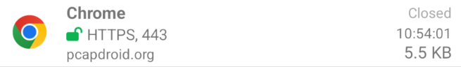
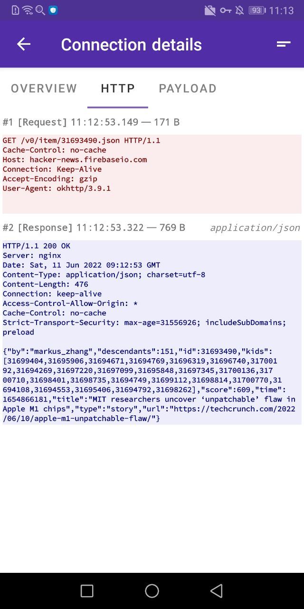

PCAPdroid 藏得最深的五个冷功能——用了半年才发现它能这么灵活
PCAPdroid 不只是一个在手机上抓包的 App，它的 TCP 实时导出、解密规则通配符、Full payload 开关这些隐藏入口，把它从工具拉成了一个迷你流量分析平台。
你以为 PCAPdroid官网 介绍的就是个"手机上的 Wireshark"——从官方下载装上去、点开始、看谁在联网，对吧？我刚开始也是这么用的，后来越玩越觉得不对劲：它很多真正值钱的功能，藏得比 App 图标还深。
有些功能藏在设置第三层菜单里，有些藏在你根本不会点的汉堡菜单角落，还有一个是我翻遍社区帖子才在一个不起眼的配置项里找到的。今天把我挖出来的五个冷功能整理一下，每一个都是"发现之后立刻改了日常工作流"的那种。
一、TCP 导出器：让手机流量实时流进电脑的 Wireshark
多数人抓完包都是在手机里存个 PCAP 文件，然后用数据线传去电脑分析。我之前也这么干——直到某天在设置里翻到一个叫 TCP Exporter 的选项。
这个功能藏在 Dump Mode 的下拉菜单里，默认是 PCAP File。切到 TCP Exporter 之后，手机不再存文件，而是主动发起一个 TCP 连接，把抓到的每个包实时推到你指定的 IP 和端口上。电脑端一行命令就能接住：
nc -lvp 1234 | wireshark -k -i -意思是 netcat 监听 1234 端口，收到的数据直接管道喂给 Wireshark，后者立刻开始实时渲染。我第一次跑通的时候鸡皮疙瘩都起来了——手机上每打开一个网页，电脑上的 Wireshark 就同步出现那一整段 TCP 握手和 HTTP 请求，零延迟。
为什么这个功能好？一是 TCP 可靠传输，WiFi 信号抖动也不会丢包乱序，之前用 UDP 导出器试过一次，信号稍微差点就丢到怀疑人生。二是不用存文件，抓多长都不怕手机内存满。三是电脑端用什么工具接收完全自由——你可以管道给 Wireshark，也可以 nc -lvp 1234 > capture.pcap 存文件，或者 tcpdump -r - 直接过滤，想怎么处理怎么处理。
入口路径：设置页 → Dump Mode → TCP Exporter，然后填电脑的局域网 IP 和端口。电脑端 nc 必须先启动监听，再在手机上点开始抓包——因为手机是 TCP 客户端，顺序反了会连不上。
什么人用得上：需要配合 Wireshark 做深度分析的、抓包时间长怕存不下的、或者就是想看实时流量流的。如果你只是偶尔抓一下存个文件，那 HTTP Server 模式浏览器下载还是最简单的，更多导出模式的参数对比可以去PCAPdroid文档里翻。
二、解密规则不止按应用选——通配符和包名前缀才是精髓
TLS 解密是 PCAPdroid 的招牌功能，但我一开始只用它的"按应用选"规则——点个 Chrome，只解 Chrome 的流量。够使，但不够灵活。
真正的威力藏在 Decryption rules 这个菜单里。入口是汉堡菜单（☰）往下翻，不在设置里。打开后点添加新规则，规则类型不止"应用"一种——还有"主机"、"端口"、"包名前缀"三种：
- 按主机选：填域名，支持通配符
*.example.com，匹配这个域名下的所有子域。比如你想解某个大厂所有业务的 TLS，不用一个个加应用，一个通配符全搞定。 - 按端口选：只解特定端口的 TLS，比如只解 443 的 HTTPS 流量。
- 按包名前缀选：比如
com.example.开头的所有应用，批量加自家开发的一堆 App 特别省事。
我之前写了个测试 App 套件，十几个包名前缀都是 com.testsuite. 的，挨个加规则要十分钟。后来发现包名前缀这一项，一条规则全搞定。
还有一个冷知识：这些规则可以组合用，而且支持启用/禁用开关，不用删了重建。我现在把规则分成几组——日常用的、临时测试用的、特定场景用的，随时切换开关。
三、Full payload 开关：不打开它，TLS 解密等于白开
这是我踩过最蠢的坑。
第一次配好 TLS 解密，连接列表里的锁图标全绿了，点开一看——只有 TLS 握手那几行，后续的 HTTP 请求体、响应体全看不到。我以为解密就这水平，沮丧了好几天。
后来在设置里翻到一个叫 Full payload 的选项，开关默认是关的。打开之后重新抓包，同一个连接立刻多出了一大段明文 HTTP payload——请求头、Cookie、响应 JSON，全出来了。
原来 PCAPdroid 默认只解密 TLS 握手和元数据，不自动把完整载荷解密出来。Full payload 是显式要求解密并展示完整明文的开关。不开的话，你看到的只是"这个连接加密了"这一层信息，不是"这个连接里传了什么"。
入口路径：设置页 → 找 Full payload（或者翻译后的"完整载荷"），打开它。配合 TLS 解密一起用才是完整形态。
这个坑特别容易踩，因为锁图标绿了就会让人觉得解密"成功了"。实际上绿锁只代表握手成功，不代表载荷已解密。Full payload 才是那个"最后一公里"的开关。
四、锁图标颜色：一眼诊断解密状态的信号灯
说到锁图标，你有没有注意过它不止绿色一种颜色？
- 🟢 绿色打开的锁：TLS 解密成功，Full payload 开着的话能看到明文
- 🔴 红色锁：解密失败，点进连接详情能看到具体原因
- 🟠 橙色锁：协议不支持解密，比如 QUIC 或者某些自定义加密协议
- ⚪ 灰色开锁：本来就不加密，比如明文 DNS、HTTP
- ⚪ 灰色闭锁：解密还没生效——可能规则没配、可能还在等握手数据
我之前看到灰色闭锁以为又踩了什么 bug，后来才知道这是规则没命中或者连接还没完成握手的状态提示。等几秒变成绿色就正常了。
红色锁才是真要处理的。点进连接详情面板会直接告诉你原因——"client does not trust proxy's certificate" 就是应用做了证书锁定，或者 Android 7+ 不信任用户证书；"protocol not supported" 就是橙色锁无解。
这个颜色编码我至今没在官方显眼位置看到过完整说明，属于社区帖子里挖出来的隐形知识。但它是你日常排查解密问题最快的入口——扫一眼连接列表的颜色分布，就知道哪条有问题、该不该点进去。
五、VpnService 不是真 VPN——它是个本地流量过滤器
最后一个，是个认知纠正。
每次 PCAPdroid 第一次启动抓包都会弹一个 Android 系统级的 VPN 确认对话框。很多人看到就慌了——"这 App 要连我的 VPN？"其实不是。
PCAPdroid 用的是 Android 的 VpnService API，但它创建的虚拟网络接口不是真的 VPN 隧道。真正的 VPN 会把流量加密发往远端服务器再转发出去，而 PCAPdroid 的虚拟接口只是把所有流量引到自己的进程里本地处理——抓到包之后原样发出去，不加密、不转发、你的公网 IP 也不会变。
所以它弹的那个确认框，本质是 Android 对"创建虚拟网络接口"这个行为的强制安全弹窗，不是真的要你连某个 VPN 服务器。任何 App 只要想用 VpnService，这个弹窗就无法绕过——PCAPdroid 也不例外。
还有一点：停止抓包后 VpnService 会关闭，但某些 Android 版本或 ROM 实现（比如小米 MIUI、OPPO ColorOS）会记住你的选择，下次开始抓包不再弹。如果频繁弹窗烦人的话，把 PCAPdroid 加到系统的自启动/后台白名单、允许它始终运行，多少能缓解。
有个坑别踩：TLS 解密用完就关
最后说一个安全提醒，也是我在挖这些功能时顺手翻到的风险说明。
每次启用 TLS 解密，PCAPdroid 都会动态生成一份独立的 CA 根证书并加入设备证书存储。它的私钥存在应用私有目录，卸载应用后数据清除 = 私钥销毁，但那份 CA 根证书可能还留在系统证书存储里。
这意味着如果有人物理拿到你的设备并且获取 root 权限，或者你自己导出的 PCAP + keylog 文件被窃取，这份 CA 可以解密你过往的所有 TLS 流量。
降低风险的办法：TLS 解密用完就关掉开关，应用卸载时顺手去系统设置 → 安全 → 加密与凭据 → 用户凭据里把 PCAPdroid CA 删掉。敏感场景（银行、支付）的流量别随便开 TLS 解密，用完立刻关。
PCAPdroid 这个 App 有意思的地方在于——它表面上是个工具，内核却做得很灵活。TCP 导出器让它能实时对接电脑端分析链，解密规则的通配符让它能批量管理目标应用，锁图标颜色编码让状态诊断变成了扫一眼的事。这些功能藏得深，但挖出来之后，整个抓包工作流的上限就被抬高了。
我现在每次启动它，都先扫一眼锁图标的颜色分布，再决定要不要开 Full payload，抓完包用 TCP 导出器直接推给 Wireshark。比半年前只会存文件传电脑的那个自己，效率至少翻了三倍。
写这篇的时候查了不少社区和官方资料，顺手整理了一份冷门功能的配置清单放在了 GitHub、Gitee、GitCode 三处，想深入研究的可以翻翻。

